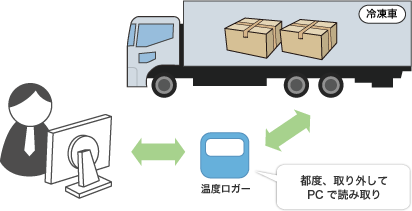
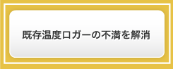
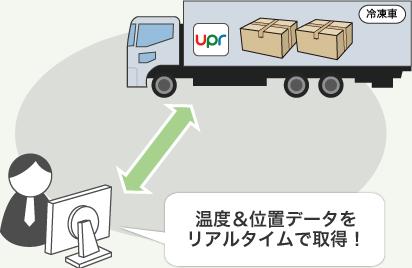

冷凍食品の温度管理｜導入事例｜追跡システムの【なんつい】｜upr株式会社
- トップ
- 追跡システムの【なんつい】
- 事例
- 冷凍食品の温度管理
導入事例その06 冷凍食品の温度管理になんついを活用 【食品メーカー様】
他社製ロガーから温度センサー付なんついに切替
端末タイプ : 定期報告タイプ 【標準仕様】 ※防水加工
なんつい導入前
これまで使用していた温度ロガーは…
温度データの読み取りに手間が掛かる
→毎回トラックの冷凍庫から取り出して専用PCに接続
位置追跡機能が無いので、どの地点で温度異常が発生したか分からない

なんつい導入後
温度センサー付なんついの導入により…
データ読み取りの手間が解消
→端末が温度データをサーバへ自動発信。内容は管理者がUPRサーバにアクセスして確認
データはUPRサーバへ最大３ヶ月分まで自動保存
温度情報と合わせて位置情報も取得できるようになった




・温度センサー部 → 冷凍車の冷凍庫内に設置
・端末本体 → シャーシの道具箱内に設置
冷凍食品の温度管理の事例です。輸送・運搬、保管に便利なパレットおよび運搬機器のレンタル、研究開発、販売ならupr株式会社にお任せください。設立35年、全国120拠点から、日本の物流をサポートします。